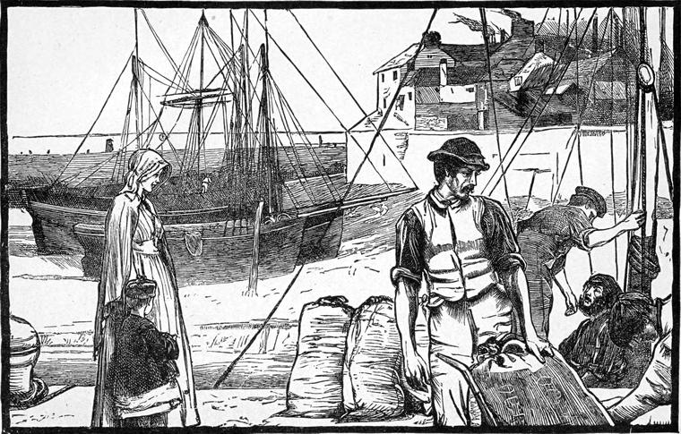

After this Thomas made rapid progress in the favor of Captain Smith. He had looked upon him as a landlubber before, with the contempt of his profession; but when he saw that, clerk as he was, he was yet capable at sea, he began to respect him. And as Thomas wakened up more and more to an interest in what was going on around him, he did not indulge in giving him fool's answers to the questions he asked, as so many sea-farers would have been ready to do; and he soon found that Thomas's education, though it was by no means a first-rate one, enabled him to ask more questions with regard to the laws of wind and water and the combination of forces than he was quite able to solve. Before they reached the end of the voyage, Thomas knew the rigging pretty well, and could make himself useful on board. Anxious to ingratiate himself with the captain—longing almost unconsciously for the support of some human approbation, the more that he had none to give himself—he laid himself out to please him. Having a tolerably steady head, he soon found himself able to bear a hand in taking in a reef in the foretop-sail, and he could steer by the course with tolerable steadiness. The sailors were a not unsociable set of men, and as he presumed upon nothing, they too gave him what help they could, not without letting off a few jokes at his expense, in the laughter following on which he did his best to join. The captain soon began to order him about like the rest, which was the best kindness he could have shown him; and Thomas's obedience was more than prompt—it was as pleasant as possible. He had on his part some information to give the captain; and their meals in the cabin together were often merry enough.
"Do you think you could ever make a sailor of me?" asked Tom, one day.
"Not a doubt of it, my boy," the captain answered. "A few voyages more, and you'll go aloft like a monkey."
"Where do you think of making your next voyage, sir?" asked Tom.
"Well, I'm part owner of the brig, and can do pretty much as I like. I did think of Dundee."
"I should have thought they have coal enough of their own thereabouts."
"A cargo of English coal never comes amiss. It's better than theirs by a long way."
"Would you take me with you?"
"To be sure, if you can't do better."
"I can't. I don't want anything but my rations, you know."
"You'll soon be worth your wages. I can't say you are yet, you know."
"Of course not. You must have your full crew besides."
"We're one hand short this voyage; and you've done something to fill the gap."
"I'm very glad, I'm sure. But what would you advise me to do when we reach Newcastle? It will be some time before you get off again."
"Not long. If you like to take your share in getting the cargo on board, you can make wages by that."
"With all my heart," said Thomas, whom this announcement greatly relieved.
"It's dirty work," said the captain.
"There's plenty of water about," answered Thomas.
When they came to Newcastle, Thomas worked as hard as any of them, getting the ballast out and the new cargo in. He had never known what it was to work before; and though it tired him dreadfully at first, it did him good.

Among the men was one whom he liked more than the rest. He had been in the merchant service, and had sailed to India and other places. He knew more than his shipmates, and had only taken to the coasting for a time for family reasons. With him Thomas chiefly consorted when their day's work was over. With a growing hope that by some means he might rise at last into another kind of company, he made the best he could of what he had, knowing well that it was far better than he deserved, and far better than what of late he had been voluntarily choosing. His hope, however, alternated with such fits of misery and despair, that if it had not been for the bodily work he had to do, he thought he would have lost his reason. I believe not a few keep hold of their senses in virtue of doing hard work. I knew an earl's son, an heir, who did so. And I think that not a few, especially women, lose their senses just from having nothing to do. Many more, who are not in danger of this, lose their health, and more still lose their purity and rectitude. In other words, health—physical, mental, moral, and spiritual—requires, for its existence and continuance, work, often hard and bodily labor.
This man lived in Newcastle, and got Thomas a decent room near his own dwelling, where he slept. One evening they had been walking together about the place till they were tired. It was growing late, and as they were some distance from home, they went into a little public house which Robins knew, to get a bit of bread and cheese and some ale. Robins was a very sober man, and Thomas felt no scruple in accompanying him thus, although one of the best things to be said for Thomas was, that ever since he went on board the Raven he had steadily refused to touch spirits. Perhaps, as I have hinted before, there was less merit in this than may appear, for the very smell was associated with such painful memories of misery that it made him shudder. Sometimes a man's physical nature comes in to help him to be good. For such a dislike may grow into a principle which will last after the dislike has vanished.
They sat down in a little room with colored prints of ships in full sail upon the walls, a sanded floor, in the once new fashion which superseded rushes, and an ostrich egg hanging from the ceiling. The landlady was a friend of Robins, and showed them this attention. On the other side of a thin partition was the ordinary room, where the ordinary run of customers sat and drank their grog. There were only two or three in there when our party entered. Presently, while Thomas and Robins were sitting at their supper, they heard two or three more come in. A hearty recognition took place, and fresh orders were given. Thomas started and listened. He thought he heard the name Ningpo.
Now, from Thomas's having so suddenly broken off all connection with his friends, he knew nothing of what had been going on with regard to the property Mr. Boxall had left behind him. He thought, of course, that Mrs. Boxall would inherit it. It would not be fair to suppose, however, that this added to his regret at having lost Lucy, for he was humbled enough to be past that. The man who is turned out of Paradise does not grieve over the loss of its tulips, or, if he does, how came he ever to be within its gates? But the very fact that the name of Boxall was painful to him, made the name of that vessel attract and startle him at once.
"What's the matter?" said Robins.
"Didn't you hear some one in the next room mention the Ningpo?" returned Thomas.
"Yes. She was a bark in the China trade."
"Lost last summer on the Cape Verdes. I knew the captain—at least, I didn't know him, but I knew his brother and his family. They were all on board and all lost."
"Ah!" said Robins, "that's the way of it, you see. People oughtn't to go to sea but them as has business there. Did you say the crew was lost as well?"
"So the papers said."
Robins rose, and went into the next room. He had a suspicion that he knew the voice. Almost the same moment a rough burst of greeting came to Thomas's ears: and a few minutes after, Robins entered, bringing with him a sailor so rough, so hairy, so brown, that he looked as if he must be proof against any attack of the elements—case-hardened against wind and water.
"Here's the gentleman," said Robins, "as knew your captain, Jack."
"Do, sir?" said Jack, touching an imaginary sou'wester.
"What'll you have?" asked Tom.
This important point settled, they had a talk together, in which Jack opened up more freely in the presence of Robins than he would have felt interest enough to do with a stranger alone who was only a would-be sailor at best—a fact which could not be kept a secret from an eye used to read all sorts of signals. I will not attempt to give the story in Jack's lingo. But the certainty was that he had been on board the Ningpo when she went to pieces—that he had got ashore on a spar, after sitting through the night on the stern, and seeing every soul lost, as far as he believed, but himself. He had no great power of description, and did not volunteer much; but he returned very direct answers to all the questions Thomas put to him. Had Thomas only read some of the proceedings in the Court of Probate during the last few months, he would have known better what sort of questions to put to him. Almost the only remark Jack volunteered was:
"Poor little July! how she did stick to me, to be sure! But she was as dead as a marlin-spike long afore the starn broke up."
"Were you long on the island?" asked Tom.
"No, not long," answered the sailor. "I always was one of the lucky ones. I was picked up the same day by a brigantine bound from Portingale to the Sambusy."
Little did Tom think how much might be involved in what Jack said. They parted, and the friends went home together. They made a good voyage, notwithstanding some rough weather, to Dundee, failed in getting a return cargo, and went back to Newcastle in ballast. From Newcastle their next voyage was to London again.
"If you would rather not go to London," said the master to Tom, "there's a friend of mine here who is just ready to start for Aberdeen. I dare say if I were to speak to him he would take you on board."
But Tom's heart was burning to see Lucy once more—if only to see her and restore her ring. If, he thought, he might but once humble himself to the dust before her—if he might but let her see that, worthless as he was, he worshiped her, his heart would be easier. He thought, likewise, that what with razoring and tanning, and the change of his clothes, he was not likely to be recognized. And besides, by this time the power must be out of Mr. Stopper's hands; at least Lucy must have come to exert her influence over the affairs of the business, and she would not allow them to drive things to extremity with him, worthless as he was. He would venture, come of it what might. So he told the captain that he would much prefer to work his passage to London again. It was a long passage this time, and very rough weather.
It was with strange feelings that Thomas saw once more the turrets of the Tower of London. Danger—exposure, it might be—lay before him, but he thought only of Lucy, not of the shame now. It was yet early morning when Captain Smith and he went on shore at Shadwell. The captain was going to see an old friend in the neighborhood, and after that to Limehouse, to the Mermaid, to see his sister. Thomas wanted to be alone, for he had not yet succeeded in making up his mind what he was going to do. So he sent a grateful message by the captain, with the addition that he would look in upon them in the evening.
Left alone, without immediate end or aim, he wandered on, not caring whither he went, but, notwithstanding his heavy thoughts, with something of the enjoyment the sailor feels in getting on shore even after only a fortnight at sea. It was a bright, cold, frosty morning, in the month of March. Without knowing his course, Thomas was wandering northward; and after he had gone into a coffee-shop and had some breakfast, he carelessly resumed his course in the same direction. He found that he was in the Cambridge Road, but whither that led he had no idea. Nor did he know, so absorbed was he in his own thoughts, even after he came into a region he knew, till, lifting up his head, he saw the gray, time-worn tower, that looks so strong and is so shaky, of the old church of Hackney, now solitary, its ancient nave and chancel and all having vanished, leaving it to follow at its leisure, wearied out with disgust at the church which has taken its place, and is probably the ugliest building in Christendom, except the parish-church of a certain little town in the north of Aberdeenshire. This sent a strange pang to his heart, for close by, that family used to live whose bones were now whitening among those rocky islands of the Atlantic. He went into the church-yard, sat down on a grave-stone, and thought. Now that the fiction of his own worth had vanished like an image in the clouds of yesterday, he was able to see clearly into his past life and conduct; and he could not conceal from himself that his behavior to Mary Boxall might have had something to do with the loss of the whole family. He saw more and more the mischief that had come of his own weakness, lack of courage, and principle. If he could but have defended his own conduct where it was blameless, or at least allowed it to be open to the daylight and the anger of those whom it might not please, he would thus have furnished his own steps with a strong barrier against sliding down that slope down which he had first slidden before falling headlong from the precipice at its foot. In self-abasement he rose from the grave-stone, and walked slowly past the house. Merry faces of children looked from upper windows, who knew nothing of those who had been there before them. Then he went away westward toward Highbury. He would just pass his father's door. There was no fear of his father seeing him at this time of the day, for he would be at his office, and his mother could not leave her room. Ah, his mother! How had he behaved to her? A new torrent of self-reproach rushed over his soul as he walked along the downs toward Islington. Some day, if he could only do something first to distinguish himself in any way, he would go and beg her forgiveness. But what chance was there of his ever doing any thing now? He had cut all the ground of action from under his own feet. Not yet did Thomas see that his duty was to confess his sin, waiting for no means of covering its enormity. He walked on. He passed the door, casting but a cursory glance across the windows. There was no one to be seen. He went down the long walk with the lime-trees on one side, which he knew so well, and just as he reached the gates there were his sister Amy and Mr. Simon coming from the other side. They were talking and laughing merrily, and looking in each others face. He had never seen Mr. Simon look so pleasant before. He almost felt as if he could speak to him. But no sooner did Mr. Simon see that this sailor-looking fellow was regarding them, than the clerical mask was on his face, and Thomas turned away with involuntary dislike.
"It is clear," he said to himself, "that they don't care much what is become of me." He turned then, westward again, toward Highgate, and then went over to Hampstead, paused at the pines, and looked along the valley beneath; then descended into it, and went across the heath till he came out on the road by Wildwood. This was nearly the way he had wandered on that stormy Christmas Day with Mary Boxall. He had this day, almost without conscious choice, traversed the scenes of his former folly. Had he not been brooding repentantly over his faults, I doubt if he could have done so, even unconsciously. He turned into the Bull and Bush, and had some dinner; then, as night was falling, started for London, having made up his mind at last what he would do. At the Bull and Bush he wrote a note to Lucy, to the following effect. He did not dare to call her by her name, still less to use any term of endearment.
"I am not worthy to speak or write your name," he said; "but my heart is dying to see you once more. I have likewise to return you your mother's ring, which, though it has comforted me often in my despair, I have no longer any right to retain. But I should just like to tell you that I am working honestly for my bread. I am a sailor now. I am quite clear of all my bad companions, and hope to remain so. Dare I ask you to meet me once—to-morrow night, say, or any night soon, for I am not safe in London? I will tell you all when I see you. Send me one line by the bearer of this to say where you will meet me. Do not, for the sake of your love to me once, refuse me this. I want to beg your forgiveness, that I may go away less miserable than I am. Then I will go to Australia, or somewhere out of the country, and you will never hear of me more. God bless you."
He cried a good deal over this note. Then came the question how he was to send it. He could, no doubt, find a messenger at the Mermaid, but he was very unwilling to make any line of communication between that part of London and Guild Court, or, more properly, to connect himself, whose story was there known, with Lucy's name. He would go to the neighborhood of Guild Court and there look out for a messenger, whom he could then watch.